Skulpturen im öffentlichen Raum
70 erfasste Werke in Chemnitz — von der Gründerzeit bis in die Gegenwart.
MockupWas das Verzeichnis leistet
- Filter und Suche: nach Stadtteil, Jahrzehnt, Material, Gattung und Zustand — bei 70 Werken der wichtigste Zugang.
- Umschaltbare Ansicht: Galerie mit Bildern oder kompaktes Verzeichnis zum Nachschlagen.
- Die Fotografien stammen von Frank Krüger.
Emil Mund
Junge auf Eseltier
1939
Achim Kühn
Türgestaltung
1974
Armin Forbrig
Kennzeichen D
1997
Berthold Dietz
Sinnende
1974
Bruno Ziegler
Wassergetier
1935
Christoph Roßner
Liebesnest
2004
Karl Clauss Dietel
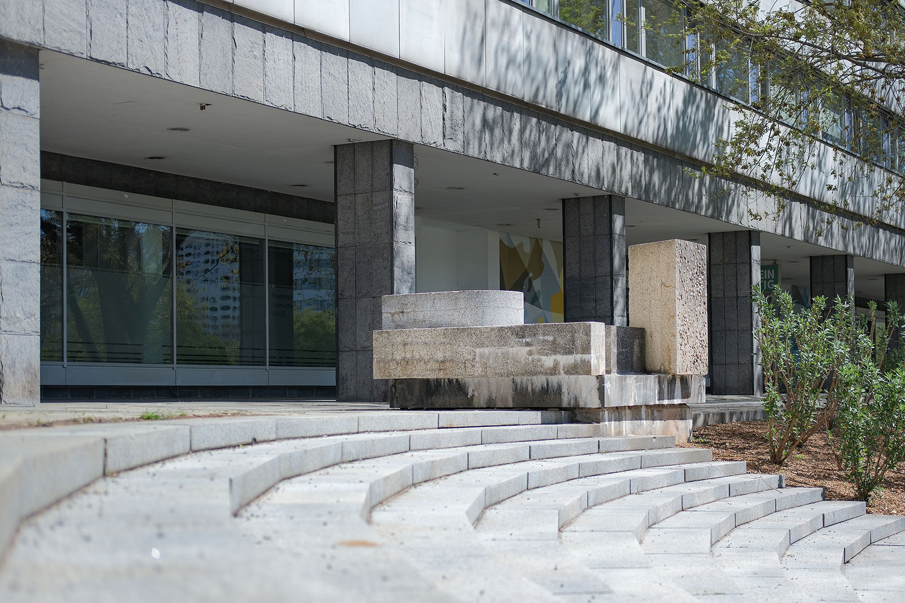
Teilung
1976–1980
Friedrich Becker; Franz Karl Bößer; Dagmar Ranft-Schinke; Lydia Thomas u. a.
Radschläger
2001–2019
Daniel Widrig
Manifold
2022
Friedrich Rogge
Georgius Agricola
1955
Fritz Böhme
Versuch des unendlichen Menschen
1979
Rudolf Kraus
Tanzendes Paar und Geiger
1955
Gerhard Lichtenfeld
Tanzendes Mädchen
1966–1980
Gerd Jäger
Würde, Schönheit und Stolz des Menschen im Sozialismus
1973
Gottfried Kohl
Völkerfreundschaft
1964
Gottfried Kohl
Jugend
1977–1980
Gudrun Berndtnicht mehr vorhanden
Dekorative Gestaltung
1983
Hanns DiettrichAbbildung
Ernst Thälmann
1958–1966
Hanns Diettrich
Spielende Kinder
1964
Hanns Diettrich
Mahnmal für die Opfer des Faschismus
1952
Hanns Diettrich
Augustkämpfer
1962–1977
Hans Brockhage
Mooreiche
1982
Harald Stephan
Paar
1982–1983
Harald Stephan
Großer Torso
1971–1982
Harald Stephannicht mehr vorhanden
Großer Akt
1979
Hubert Schiefelbein
Strukturgestaltung
1973–1974
Ingeburg Hunzinger
Sphinx
1974–1982
Ingeburg Hunzinger
Mutter und Kind
1974
Johann Belz
Jugendbrunnen
1964
Purple PathJohann Belz
Klapperbrunnen
1967–1968
Johann Belz
Kampf und Sieg der revolutionären deutschen Arbeiterklasse
1968–1977
Johann Belz
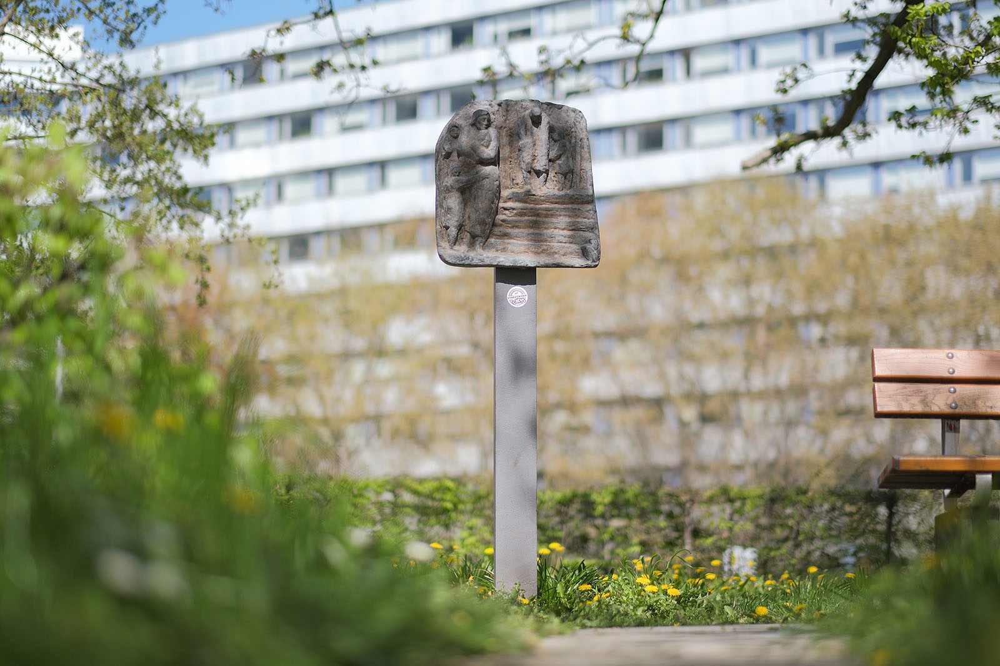
Trennung und Abstieg - Die Not der Arbeiterfamilien
1977
Johannes Schilling
Die vier Tageszeiten
1860–1871
Johannes Schulze
Liegende
1979
Johannes Schulze
Schwimmer
1977
Karl Rätsch
Torso XXVII - Der Vermächtnishafte
1987
Katharina Siebenbornnicht mehr vorhanden
Dekorative Brückengestaltung
2001
Purple PathMichael Morgner
o.T. (Angst)
1994–2018
Mik Simčič
Christina
1989
Purple PathOsmar Osten
Oben-Mit
2024
Peter Fritzsche
Hochzeitsbrunnen
1980–1984
Peter Fritzsche
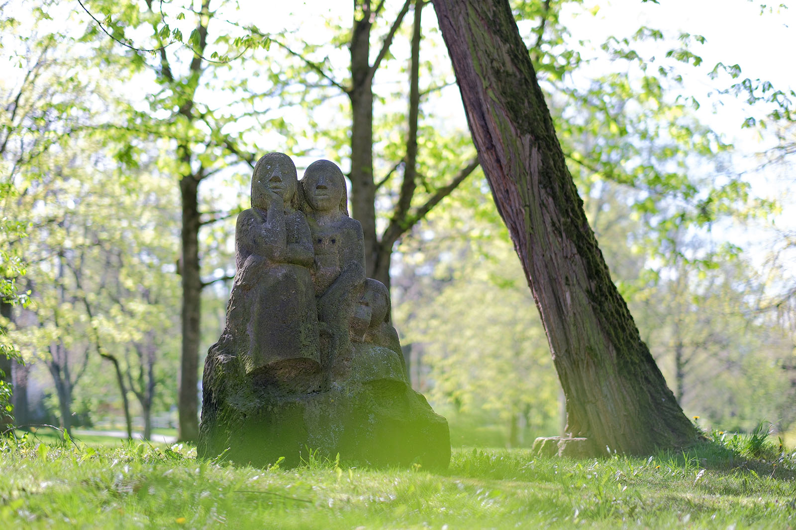
Die Lauschenden
1979–1980
Rüdiger Philipp Bruhn
Ginko
2001
Rainer Maria Schubert
Fisch
1983–1988
Rainer Maria Schubert
Schwarzes Kurzhaarschaf und zwei schwarze Widder
1985–1987
Rainer Maria Schubert
Drei Skulpturen - Verwicklungen
2001
Ralph Siebenborn
Kristallbrunnen
1977–1980
Ralph Siebenborn
7 magere und 7 fette Jahre
1995
Ralph Siebenborn
Fahnenplastik
1978
Reinhard Grütz
Dekoratives Wasserspiel
1980
Rolf Magerkord
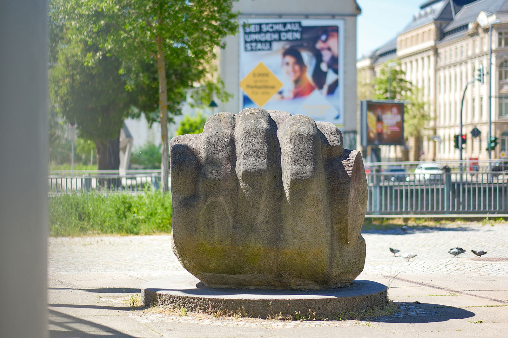
Darstellende Kunst
1990
Sabina Grzimek
Stehender männlicher Akt
1977–1981
Sabina Grzimek
Sinnende
1972–1980
Siegfried Krepp
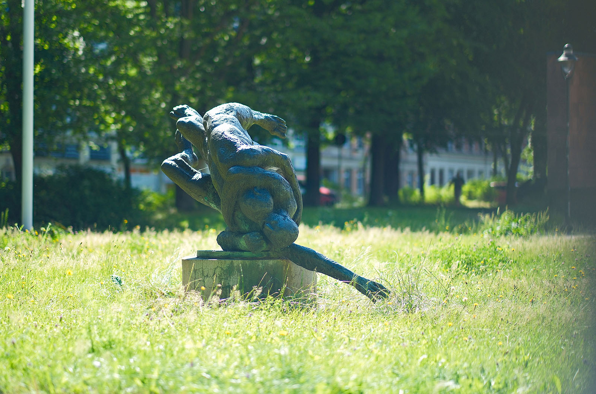
Die Ringenden
1980
Silke Rehberg
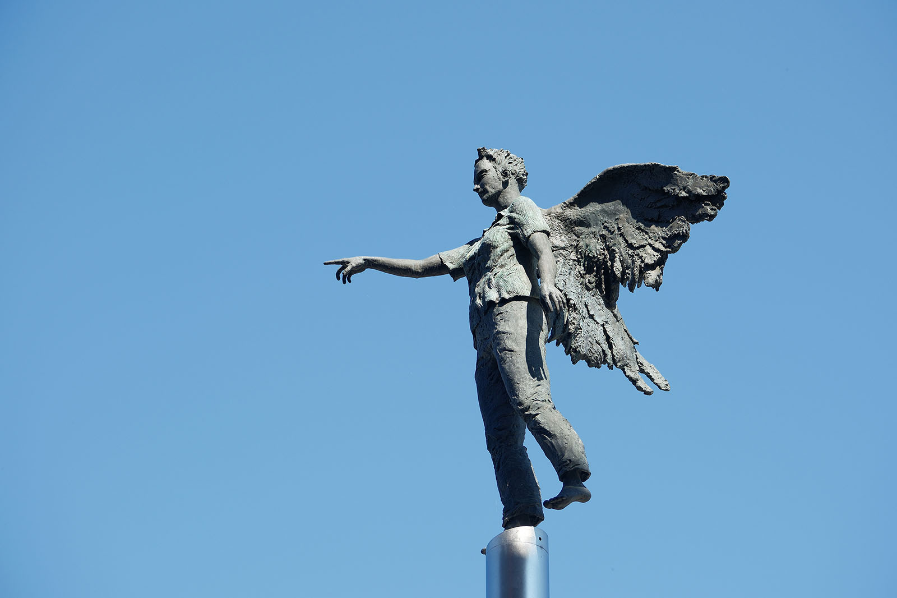
Engel
1997
Steffen Volmer
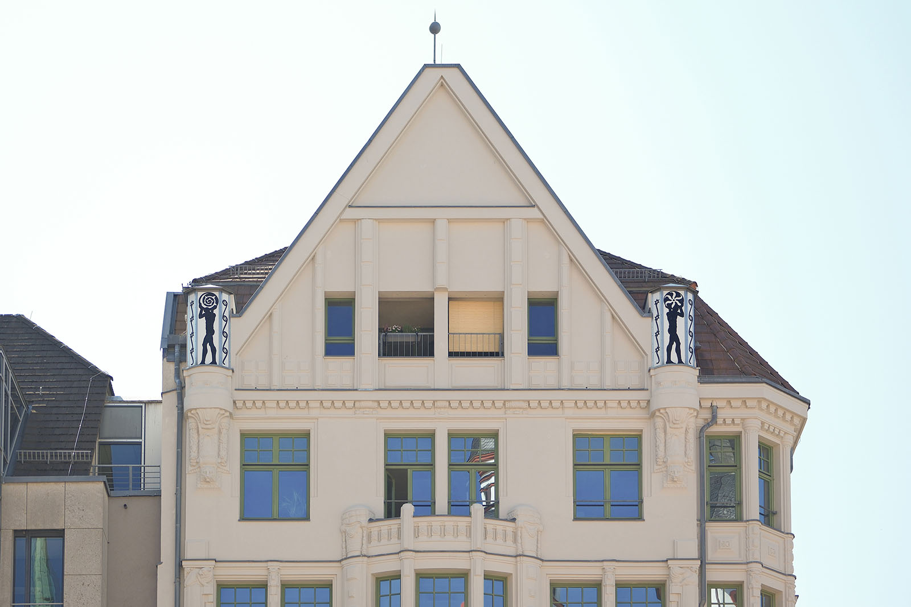
Laterna
1997
Steffen Volmer
Denkstein
o. J.
Theo Balden
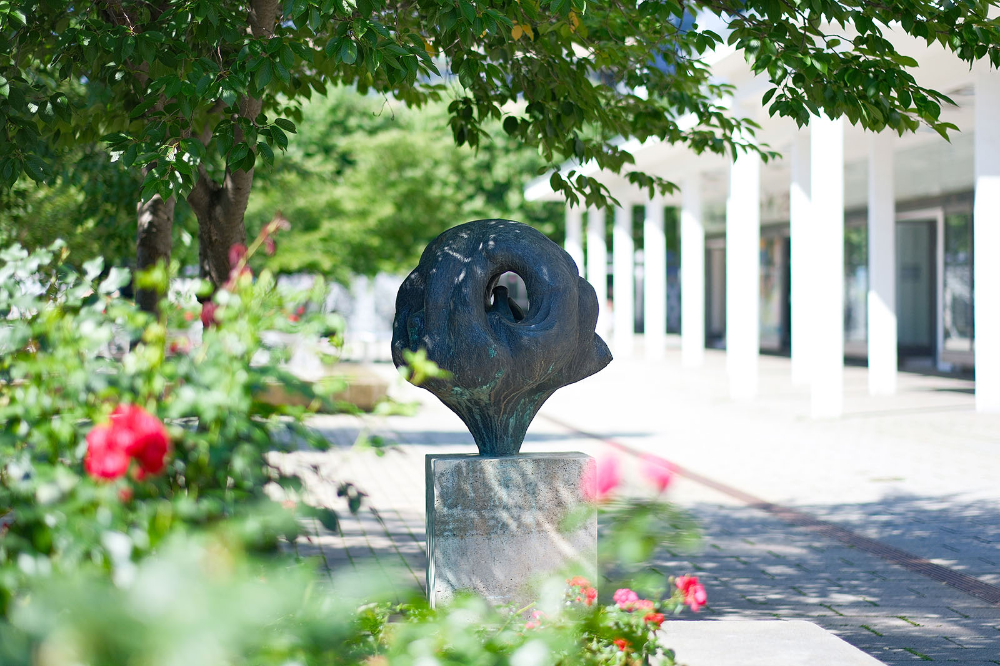
Großer Vogelbaum
1987
Volker Beier
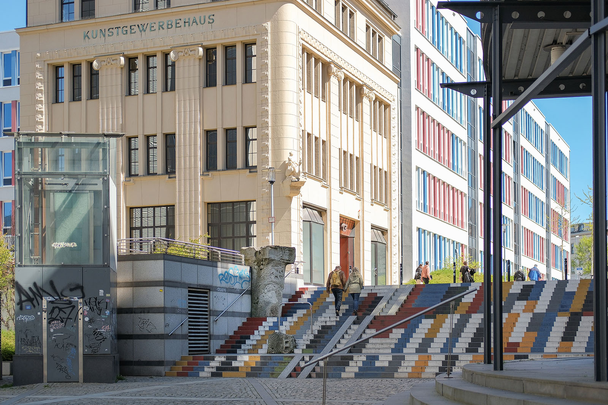
Agricolaehrung
1994
Volker Beier
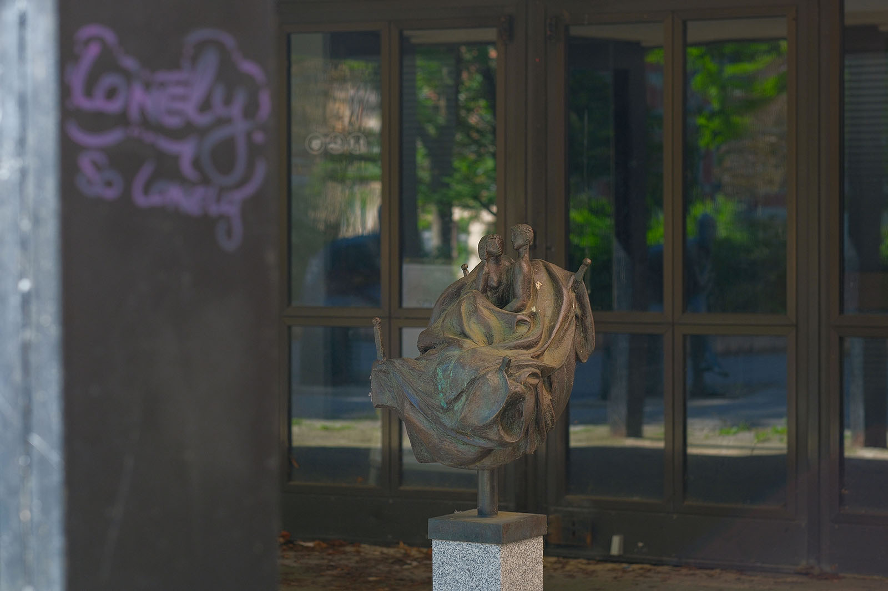
Liebesnest
1980
Volker Döring
Zeichen
1980
Walter Howard
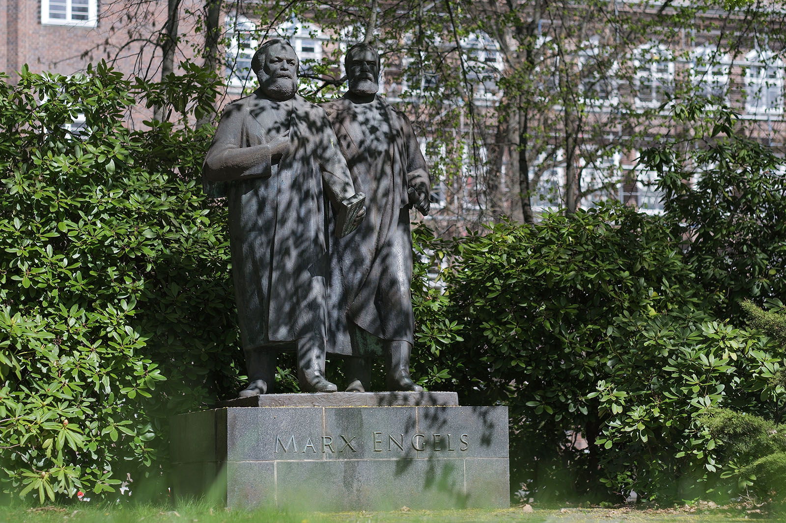
Marx-Engels-Denkmal
1957
Purple PathEberhard Göschel
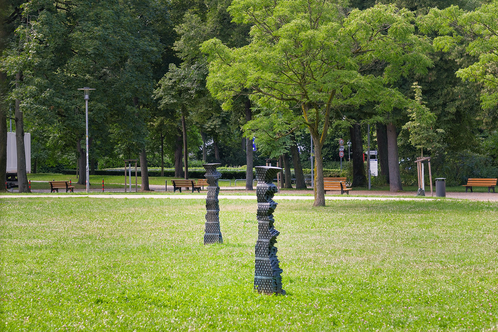
Cora / Mabel
2018
Julia Kausch
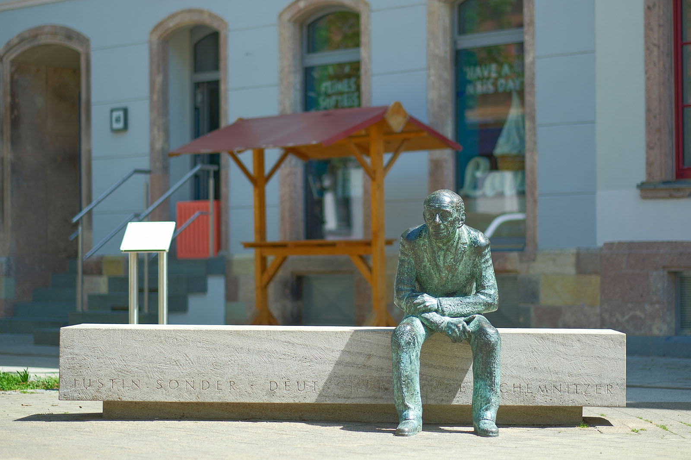
Denkmal für Justin Sonder
o. J.
Wieland Förster
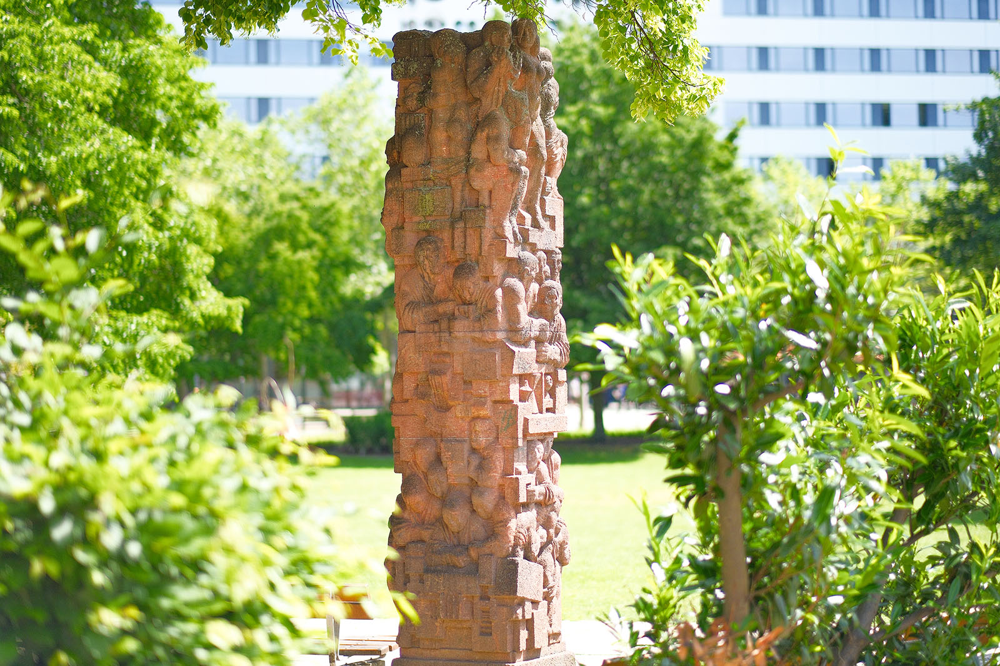
Wissenschaft - Produktivkraft
1976
Wieland Förster
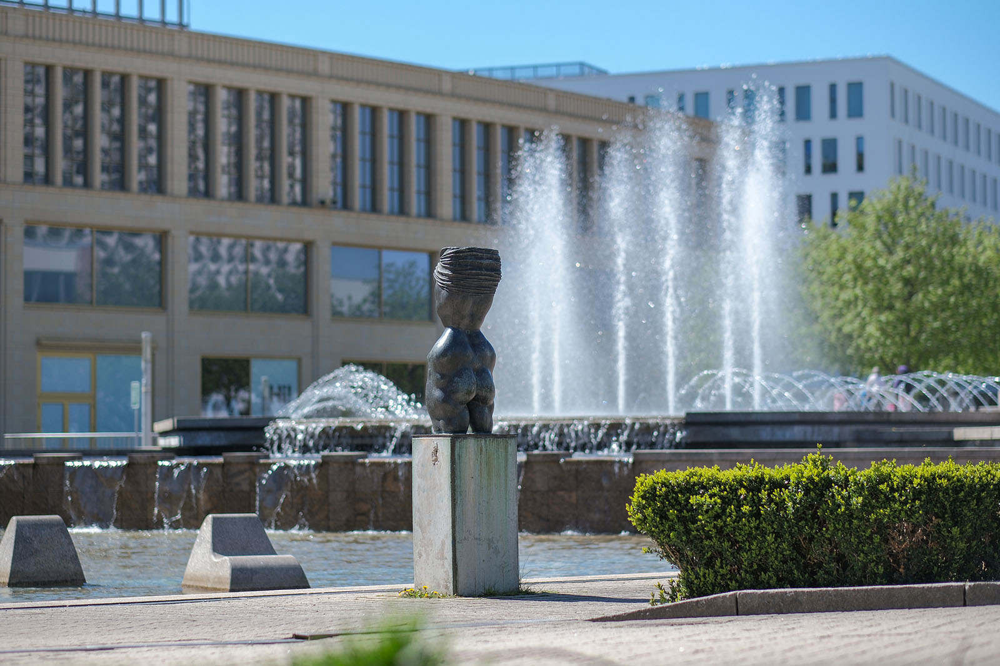
Neeberger Torso
1974
Wilfried Fitzenreiternicht mehr vorhanden
Geschlagener
1968
Wilfried Fitzenreiternicht mehr vorhanden
Sitzende
1970
Wilfried Fitzenreiter
Urteil des Paris
1976–1980
Wolfram SchneiderAbbildung
Sicile
2002